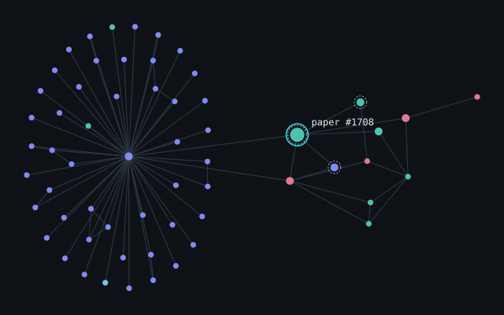

01Live demo
GraphMind Research-topic classification with a graph neural network
A two-layer graph convolutional network assigns each of 2,708 papers in the Cora citation graph to one of seven topics, combining a paper’s own word features with those of the papers it cites or is cited by.
- Test accuracy (1,000 papers)
- 0.792
- re-evaluated
- Same model, citations removed
- 0.678
- ablation
- PyTorch Geometric
- ONNX Runtime
- FastAPI
- JavaScript / SVG